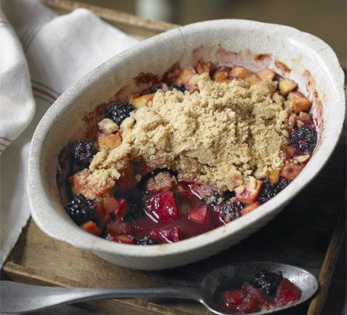

Blackberry Crumble

Description
I look forward to August every year because I get to make my favorite dessert of all time! My house is
surrounded by blackberry bushes all ready to be picked and eaten all during this last month of the summer.
While some people prefer pie or cobblers, I will take a crumble every time. I love the crunch texture with
the taste of fresh fruit. You are encouraged to try all three and see which one you like best!
I prefer my crumble without oat in the topping, but you are welcome to encorporate oats or granola if you'd like!
Ingredients
Crumble
- Flour
- Cinnamon
- Sugar
- Brown Sugar
- Butter
- Vanilla Extract
- Egg
- Apple Cider Vinegar
Filling
- Blackberries
- Lemon Zest
- Lemon Juice
- Sugar
- Cornstarch
Steps
- To make the crumble, whisk flour, salt, baking powder, cinnamon and sugars together in a large mixing bowl.
- Using a cheese grater, grate in the frozen butter. (you could cut the butter in with a pastry cutter, if you prefer)
Gently toss the butter into the flour mixture until coated.
- Using a fork, stir in vanilla and egg yolks until egg is mostly absorbed. Add vinegar and give the mixture another stir.
Use your hands to finish incorporating all of the ingredients. Mixture should clump, but remain mostly dry.
If your mixture is not clumping, add another teaspoon of apple cider vinegar. Set crumble aside.
- To make the fruit filling, combine blackberries, lemon zest, lemon juice, sugar, and cornstarch in a separate medium mixing bowl.
- Transfer about 1/2 of the crumble mixture into the bottom of baking dish. Press mixture down using a flat measuring cup or damp hands.
Pour the berry mixture over the crust. Add the remaining crumble mixture on top. Some small clumps are best!
- Bake for 40 to 45 minutes and until top is golden brown and blackberry juice is bubbling.
Allow the crumble to cool for about 20-30 minutes. Serve with a scoop of vanilla ice cream and enjoy!